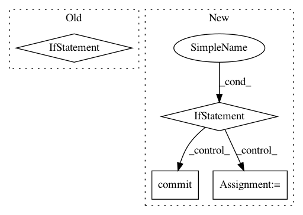

8946a24d7c1a21a80ccaf86418c354cf87e84bfa,src/fonduer/supervision/labeler.py,LabelerUDF,apply,#LabelerUDF#Any#Any#Any#Any#Any#,205
Before Change
batch_upsert_records(self.session, Label, records)
// Insert all Label Keys
if train or update:
add_keys(self.session, LabelKey, label_keys)
// This return + yield makes a completely empty generator
return
yield
After Change
raise ValueError("Please provide LFs for each candidate class.")
self.lfs = lfs
if docs:
// Call apply on the specified docs for all splits
split = ALL_SPLITS
super(Labeler, self).apply(
docs, split=split, train=train, lfs=self.lfs, clear=clear, **kwargs
)
// Needed to sync the bulk operations
self.session.commit()
else:
// Only grab the docs containing candidates from the given split.
split_docs = get_docs_from_split(
self.session, self.candidate_classes, split
)
super(Labeler, self).apply(
split_docs,
split=split,
train=train,
lfs=self.lfs,
clear=clear,
**kwargs
)
// Needed to sync the bulk operations
self.session.commit()
def get_lfs(self):
Return a list of lists of labeling functions for this Labeler.
return self.lfs
In pattern: SUPERPATTERN
Frequency: 3
Non-data size: 4
Instances
Project Name: HazyResearch/fonduer
Commit Name: 8946a24d7c1a21a80ccaf86418c354cf87e84bfa
Time: 2018-09-04
Author: lwhsiao@stanford.edu
File Name: src/fonduer/supervision/labeler.py
Class Name: LabelerUDF
Method Name: apply
Project Name: snorkel-team/snorkel
Commit Name: 2a49973f5a140e2f7fd278f00fc66963bd96d4be
Time: 2016-09-04
Author: ajratner@gmail.com
File Name: snorkel/loaders.py
Class Name:
Method Name: create_or_fetch_set
Project Name: home-assistant/home-assistant
Commit Name: e0dd5a855870e007cc7c8900d79d73e8d56ce971
Time: 2016-07-11
Author: paulus@paulusschoutsen.nl
File Name: homeassistant/components/recorder/__init__.py
Class Name: Recorder
Method Name: run